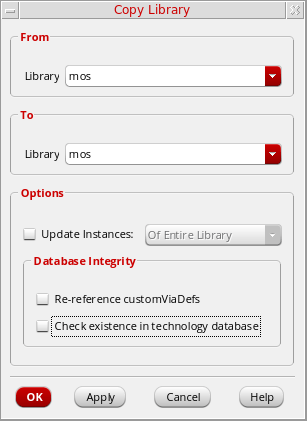

Copying a Library File
To copy a library file, follow these steps:
-
Select a library file.
If you are viewing library information in View – Lists mode, make sure the Show Files check box is selected. -
Choose Edit – Copy.
The Copy Library form appears.The selected library file appears in the Library and File fields in the From group box. It also appears in the Library and File fields in the To group box. You can change any or all of these values. - To complete the copy library file operation, follow the steps for one of the following tasks:
Copying a Library File to Another Name in the Same Library
To copy a library file to another name in the same library, do the following:
- Open the Copy Library form.
- In the To group box in the File field, type a destination file name.
- Click OK.
The From file name is copied to the To file name in the same library.
Return to top